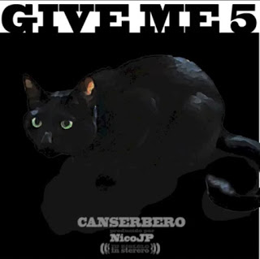

02.Jamming Sin Fronteras Ft Mcklopedia Rapsusklei y Cesar Lopez
03.Can y Garee Ft Garee
04.De Venezuela
05.Sospechoso Ft Tino Fiumara & El Pelón
06.Las Animas
07.Abuso de Poder (REMIX) Ft ZPU, El B, Norick, Silvito, I Nesta, Rotwaila, Gona, Quimico y C-kan
08.Enfermo
09.All We Need Is Hate
10.El purgatorio Ft Rms
11.La Hermandad Ft Jeicob Maccolo, Gzus, Carlos Ezequiel Madera, Convicto de Musa, Maestro PPK, Chuzo, Dos Santos, Black Kamikase, Arkano Karapaika Y Gregory Palencia
12.Juicio Ft Rxnde Akozta
13.Peace and Love
14.Cancion de Rap
15.Los Ultimos Ft Benik Fernandes
16.Nos Quieren
17.Sin Fronteras Ft NegroHp, Lapiz Conciente, Rms, Norick y Dkano
18.Cantidad & Quality Ft Rapper School
19.El Mundito del Rap Ft Solo Soul, Ice Od y RMS
20.Hablamos de Respeto Ft Arianna Puello & Sick Jacken
21-El Cinta Negra
22-Tiempos de Cambio
2014 - Canserbero - Give Me 5 (Mixtape)

01. Intro
02. Huno
03. Adibina
04. Seamos Honestos
05. Buenas Noches
06. Outro
2015 - Canserbero - Resurreccion
01 . Jeremias 17-5
02 . Querer Querernos
03 . Es Epico
04 . C’est la Mort
05 . Stop
06 . Llovia
07 . Maquiavelico
08 . Pensando en Ti
09 . Y la Felicidad Que _
10 . De la Vida Como Pelicula y Su Tragedia_ Comedia y Ficcion
11 . Ley del Hielo
12 . Vida
13 . Tripolar
14 . Mucho Gusto
15 . El Primer Trago
16 . Mundo de Piedra
17 . Buenas Noches
18 . Perdiendo la Fe
19 . Aceptas_
20 . Hace Falta Sonar
21 . Te Quiero
22 . Cuando Vayas Conmigo
24 . Stupid Love Story
25 . Y en un Espejo VI
26 . Cantidad & Quality
27 . Uno por Ellas
28 . Ready
29 . Seamos Honestos
30 . Adivina
31 . Huno
32 . En el Valle de las Sombras
33 . Advertencia
34 . Nono+ra Words
35 . Clima Tropical
36 . Mundito del Rap
37 . Ser Vero
38 . Na’
39 . Enfermo (En Vivo)
40 . Agradezco
2017 - Canserbero - Eterno
01 . Canserbero – Abuso De Poder
02 . Canserbero – Inmortal
03 . Canserbero – La Moda
04 . Canserbero – Sigo Siendo El Rey
05 . Canserbero – Hoy Voy a Mi (featBlack Kamicase)